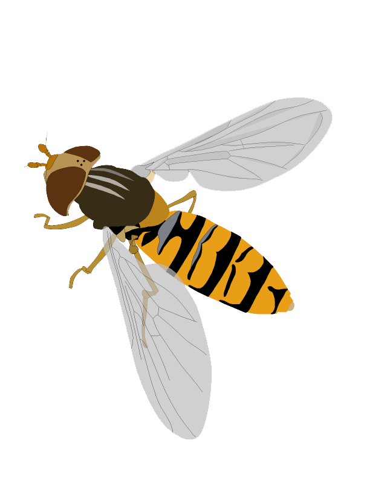

プロフィール

平岩将良
ひらいわ まさよし
Masayoshi K. Hiraiwa
所属: 近畿大学農学部環境管理学科 生態系保全研究室
専門分野: 生態学（特に送粉生態学・群集生態学）
好きな生き物: ハナアブ
Email: masayoshi.hiraiwa (あっと) gmail.com
略歴
- 2006.04-2010.03 東邦大学 理学部生物学科
- 2010.04-2012.03 東邦大学大学院 理学研究科生物学専攻 博士前期課程
- 2012.04-2013.03 神戸大学大学院 人間発達環境学研究科 研究生
- 2013.04-2017.09 神戸大学大学院 人間発達環境学研究科 博士後期課程
- 2017.10-2018.03 神戸大学大学院 人間発達環境学研究科 学術研究員
- 2018.04-2018.09 神戸大学大学院 人間発達環境学研究科 研究員
- 2018.10-2019.03 神戸大学大学院 人間発達環境学研究科 学術研究員
- 2019.04- 農研機構 生物機能利用研究部門 契約研究員